- 00 开篇词 人工智能：新时代的必修课.md.html
- 01 数学基础 九层之台，起于累土：线性代数.md.html
- 02 数学基础 月有阴晴圆缺，此事古难全：概率论.md.html
- 03 数学基础 窥一斑而知全豹：数理统计.md.html
- 04 数学基础 不畏浮云遮望眼：最优化方法.md.html
- 05 数学基础 万物皆数，信息亦然：信息论.md.html
- 06 数学基础 明日黄花迹难寻：形式逻辑.md.html
- 07 机器学习 数山有路，学海无涯：机器学习概论.md.html
- 08 机器学习 简约而不简单：线性回归.md.html
- 09 机器学习 大道至简：朴素贝叶斯方法.md.html
- 10 机器学习 衍化至繁：逻辑回归.md.html
- 11 机器学习 步步为营，有章可循：决策树.md.html
- 12 机器学习 穷则变，变则通：支持向量机.md.html
- 13 机器学习 三个臭皮匠，赛过诸葛亮：集成学习.md.html
- 14 机器学习 物以类聚，人以群分：聚类分析.md.html
- 15 机器学习 好钢用在刀刃上：降维学习.md.html
- 16 人工神经网络 道法自然，久藏玄冥：神经网络的生理学背景.md.html
- 17 人工神经网络 一个青年才俊的意外死亡：神经元与感知器.md.html
- 18 人工神经网络 左手信号，右手误差：多层感知器.md.html
- 19 人工神经网络 各人自扫门前雪：径向基函数神经网络.md.html
- 20 人工神经网络 看不见的手：自组织特征映射.md.html
- 21 人工神经网络 水无至清，人莫至察：模糊神经网络.md.html
- 22 深度学习 空山鸣响，静水流深：深度学习概述.md.html
- 23 深度学习 前方有路，未来可期：深度前馈网络.md.html
- 24 深度学习 小树不修不直溜：深度学习中的正则化.md.html
- 25 深度学习 玉不琢不成器：深度学习中的优化.md.html
- 26 深度学习 空竹里的秘密：自编码器.md.html
- 27 深度学习 困知勉行者勇：深度强化学习.md.html
- 28 深度学习框架下的神经网络 枯木逢春：深度信念网络.md.html
- 29 深度学习框架下的神经网络 见微知著：卷积神经网络.md.html
- 30 深度学习框架下的神经网络 昨日重现：循环神经网络.md.html
- 31 深度学习框架下的神经网络 左右互搏：生成式对抗网络.md.html
- 32 深度学习框架下的神经网络 三重门：长短期记忆网络.md.html
- 33 深度学习之外的人工智能 一图胜千言：概率图模型.md.html
- 34 深度学习之外的人工智能 乌合之众的逆袭：集群智能.md.html
- 35 深度学习之外的人工智能 授人以鱼不如授人以渔：迁移学习.md.html
- 36 深度学习之外的人工智能 滴水藏海：知识图谱.md.html
- 37 应用场景 你是我的眼：计算机视觉.md.html
- 38 应用场景 嘿, Siri：语音处理.md.html
- 39 应用场景 心有灵犀一点通：对话系统.md.html
- 40 应用场景 数字巴别塔：机器翻译.md.html
- 一键到达 人工神经网络复习课.md.html
- 一键到达 应用场景复习课.md.html
- 一键到达 数学基础复习课.md.html
- 一键到达 机器学习复习课.md.html
- 一键到达 深度学习之外的人工智能复习课.md.html
- 一键到达 深度学习复习课.md.html
- 一键到达 深度学习框架下的神经网络复习课.md.html
- 推荐阅读 我与人工智能的故事.md.html
- 新书 《裂变：秒懂人工智能的基础课》.md.html
- 直播回顾 机器学习必备的数学基础.md.html
- 第2季回归 这次我们来聊聊机器学习.md.html
- 结课 溯洄从之，道阻且长.md.html
- 课外谈 “人工智能基础课”之二三闲话.md.html
- （课外辅导）人工神经网络 拓展阅读参考书.md.html
- （课外辅导）数学基础 拓展阅读参考书.md.html
- （课外辅导）机器学习 拓展阅读参考书.md.html
- （课外辅导）深度学习 拓展阅读参考书.md.html
- 捐赠
（课外辅导）数学基础 拓展阅读参考书
线性代数推荐两本国外的教材。
其一是 Gilbert Strang 所著的 Introduction to Linear Algebra，英文版在2016年出到第五版，暂无中译本。这本通过直观形象的概念性解释阐述抽象的基本概念，同时辅以大量线性代数在各领域内的实际应用，对学习者非常友好。作者在麻省理工学院的OCW上开设了相应的视频课程，还配有习题解答、模拟试题等一系列电子资源。
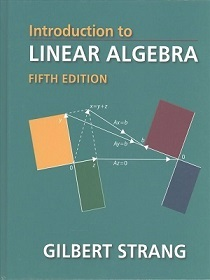
其二是 David C Lay 所著的 Linear Algebra and its Applications，英文版在2015年同样出到第五版，中译本名为《线性代数及其应用》，对应原书第四版。这本书通过向量和线性方程组这些基本概念深入浅出地介绍线代中的基本概念，着重公式背后的代数意义和几何意义，同样配有大量应用实例，对理解基本概念帮助很大。
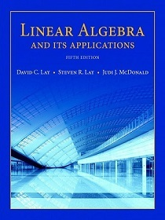
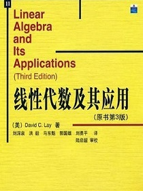
概率论的基础读物可以选择 Sheldon M Ross 所著的- A First Course in Probability，英文版在2013年出到第九版（18年马上要出第十版），中译本名为《概率论基础教程》，对应原书第九版，也有英文影印本。这本书抛开测度，从中心极限定理的角度讨论概率问题，对概念的解释更加通俗，书中还包含海量紧密联系生活的应用实例与例题习题。
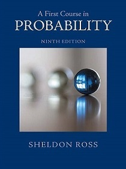
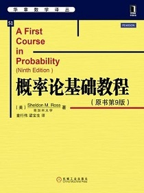
另一本艰深的读物是 Edwin Thompson Jaynes 所著的- Probability Theory: The Logic of Science，本书暂无中译本，影印本名为《概率论沉思录》也已绝版。这本书是作者的遗著，花费半个世纪的时间完成，从名字就可以看出是一部神书。作者从逻辑的角度探讨了基于频率的概率，贝叶斯概率和统计推断，将概率论这门偏经验的学科纳入数理逻辑的框架之下。如果读这本书，千万要做好烧脑的准备。
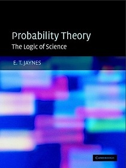
数理统计的基础读物可以选择陈希孺院士所著的《数理统计学教程》。关于统计学是不是科学的问题依然莫衷一是，但它在机器学习中的重要作用毋庸置疑。陈老的书重在论述统计的概念和思想，力图传授利用统计观点去观察和分析事物的能力，这是非常难能可贵的。
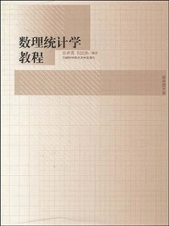
进阶阅读可以选择 Roger Casella 所著的 Statistical Inference，由于作者已于2012年辞世，2001年的第二版便成为绝唱。中译本名为《统计推断》，亦有影印本。本书包含部分概率论的内容，循循善诱地介绍了统计推断、参数估计、方差回归等统计学中的基本问题。
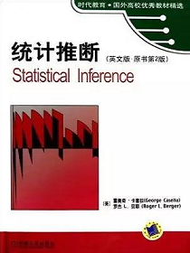
最优化理论可以参考 Stephen Boyd 所著的 Convex Optimization，中译本名为《凸优化》。这本书虽然块头吓人，但可读性并不差，主要针对实际应用而非理论证明，很多机器学习中广泛使用的方法都能在这里找到源头。
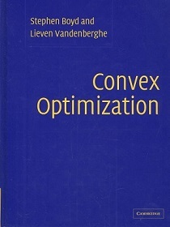
信息论书籍推荐 Thomas Cover 和 Jay A Thomas- 合著的 Elements of Information Theory，2006年出到第二版，中译本为《信息论基础》。这本书兼顾广度和深度，虽然不是大部头却干货满满，讲清了信息论中各个基本概念的物理内涵，但要顺畅阅读需要一定的数学基础。另外，本书偏重于信息论在通信中的应用。
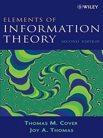
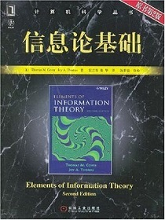
部分书目链接：
Introduction to Linear Algebra
Linear Algebra and its Applications
A First Course in Probability（8th edition）
Probability Theory: The Logic of Science
Elements of Information Theory
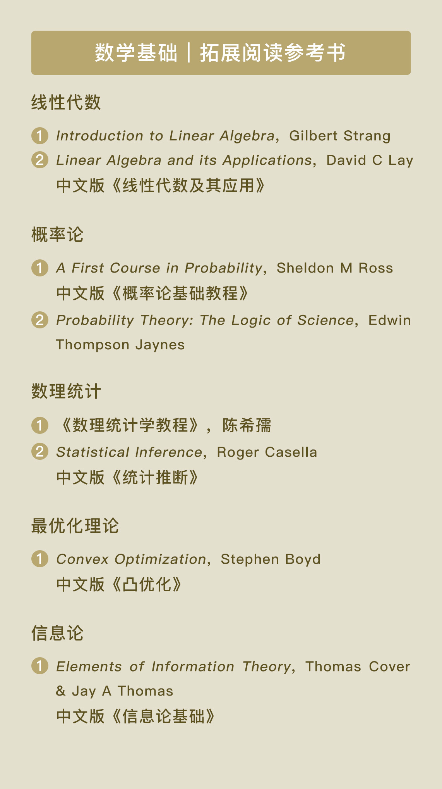
© 2019 - 2023 Liangliang Lee. Powered by gin and hexo-theme-book.